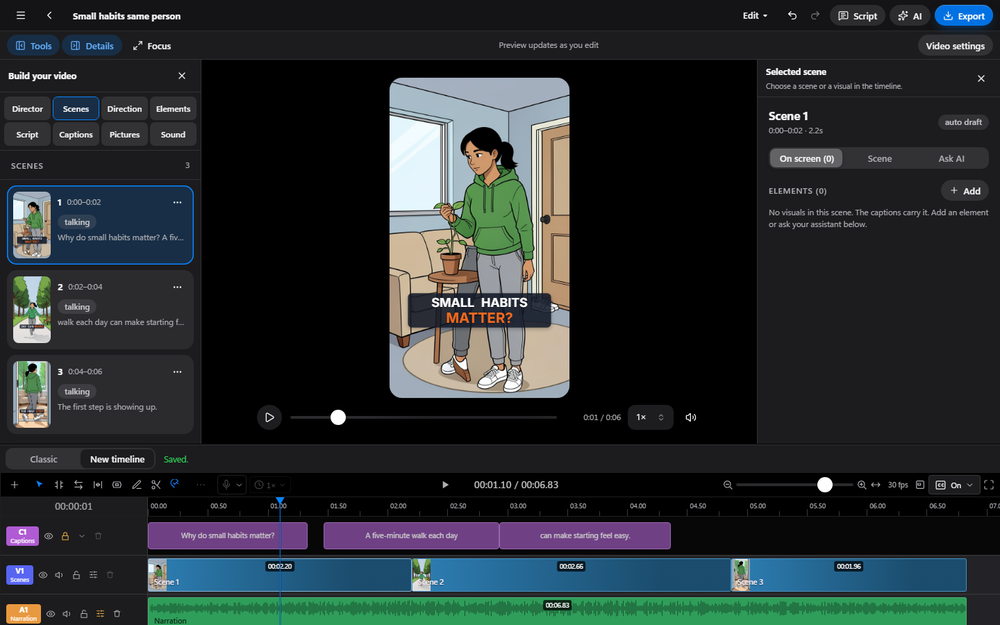
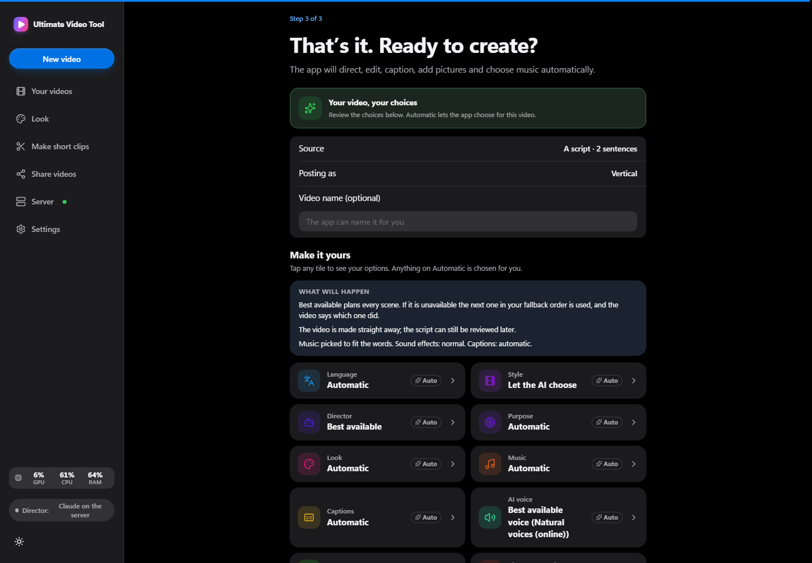
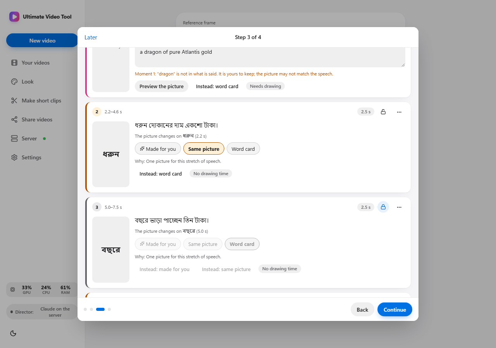
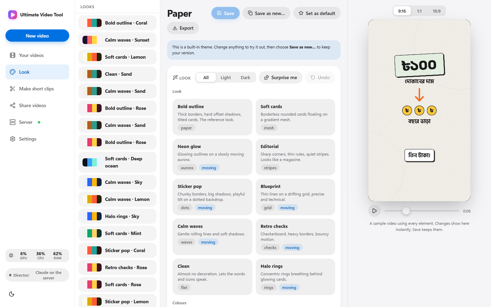
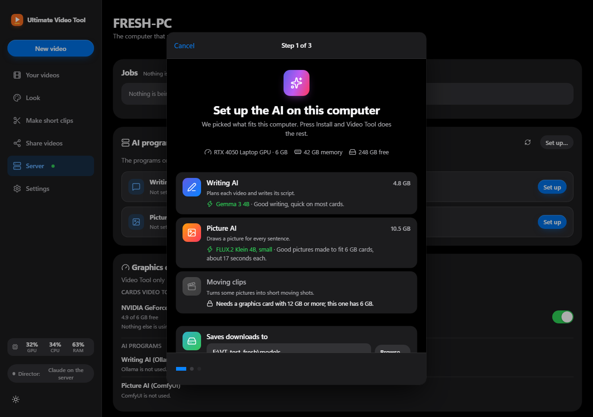

Talk. Get a finished video.
Record your voice in English, বাংলা or Banglish, or just type a script. An AI director plans every scene, finds the pictures, designs the look and adds captions, music and sound. Then you change anything you like.
Voiced, timed and rendered by Ultimate Video Tool. Its voice engine read the script, its word timing drives every caption and cut, and its HyperFrames renderer drew every frame.
How it works
You talk. The director edits.
You have the final cut.
Record, type or paste a link
Speak into the browser, upload a recording, type a script for a natural voice to read, or paste a link. Silences, "um"s and retakes are cut, and every word is timed.
An AI director makes the video
It reads what is said and plans each scene: charts for numbers, checklists for steps, cartoons for stories, and pictures that fit each word. Then it watches its own cut and fixes the weak moments.
You finish it your way
Tell the director what to change in plain words, or move, resize and retime any element on the multitrack timeline. Export in 9:16, 1:1 or 16:9.
Features
Everything a faceless video needs
Built for people who have something to say and no time to edit.
Your voice, cleaned up
Noise, silences, fillers and retakes are removed automatically. GPU speech recognition times every word in English and Bangla.
Or no voice at all
Type a script and pick a voice: online neural voices, offline voices, or a clone of your own. Write Riya: / Sam: lines for a discussion.
20+ scene types
Big numbers, rings, bar and trend charts, timelines, steps, checklists, pros and cons, quotes, device mockups, price cards. Each one appears only when the words support it.
Characters that act
Rigged stick figures and cartoon casts walk, point, react and lip-sync to the voice on illustrated sets, with speech bubbles and camera moves.
A look for every video
10 looks × 18 palettes, moving backgrounds, paired Bangla and English fonts, and word-timed captions. Text over pictures is always kept readable.
Music and sound
Music follows the mood and ducks under the voice. Sound effects land on the cuts. Loudness is set for every platform.
It checks its own work
A vision pass catches text that is cut off, crowded or hard to read. A viewer test scores retention and sends the weak moments back to the director.
Short clips and posting
Find the best moments of a long recording and turn them into Shorts. Get a title, description, hashtags and cover, and post to YouTube, Meta and TikTok from a queue.
A real editor
Multitrack timeline, trimming, keyframes and a captions track. Edit any element's position, size, rotation and timing, with full undo.
Inside the app
Automatic until you want control




AI directors
Bring your own AI. Or none.
One director handles a whole video, and you can read every prompt and answer in the app. If no AI answers, built-in rules still make a complete video, and the video tells you so.
- Private by default. Local models through Ollama, on your computer or anywhere on your network.
- No API key for Claude or Codex. Uses the CLI you are already signed in to.
- An MCP server built in. Claude Code, Claude Desktop, Cursor, VS Code or Gemini CLI can create, plan, edit and render videos for you.
# in Claude Code, inside the repository /vt-plan # plan every video waiting for Claude # or from any MCP client vt-mcp # stdio vt-mcp --http --port 8766 # token-protected
Two apps, one studio
Edit on a laptop. Render on a GPU.
The editor is a light desktop app. The heavy work runs on a server, which can be the same computer or a graphics machine on your network.
Ultimate Video Tool
- The editor, timeline and look designer
- Installs in seconds: no Python, no models
- Finds a server on this computer by itself, or connects by address
- Connects Claude and Codex on your computer
Ultimate Video Tool Server
- Speech, director, voices, pictures and rendering
- Sets up Ollama, ComfyUI and models to fit your card
- You choose which graphics cards it may use
- Desktop app, headless package or Docker

Install
Get started
Ultimate Video Tool Server
Install it on the computer that will do the work. Its setup screen fits the AI to your graphics card.
.exe · .AppImage · .deb
Ultimate Video Tool
Install the editor on any computer. On the same machine it finds the server. Elsewhere, type the server's address.
.exe · .AppImage · .deb
Video Tool Engine
A headless server for a Linux or Windows GPU machine, or a container.
.zip · .tar.gz · Docker
The installers are not code-signed yet. On Windows, choose More info → Run anyway the first time.
Windows
git clone https://github.com/atanuroy911/ultimate-video-tool.git
cd ultimate-video-tool
./scripts/dev-install.ps1 -Role both
Linux
git clone https://github.com/atanuroy911/ultimate-video-tool.git
cd ultimate-video-tool
bash scripts/dev-install.sh --role both
Needs Git and FFmpeg. The scripts download their own Node, Python and dependencies into a private folder, and never touch your system Python. All options.
Free and open source
Ultimate Video Tool is licensed under the GNU AGPL-3.0. Use it, study it, change it and share it. Bug reports, test recordings, looks, scene types and code are all welcome.
- Your files stay yours. Projects, models and voices live on your own computers.
- Credits are automatic. Licences of stock media are tracked and written next to every export.
- Built in the open. The roadmap, the status of every feature and its test evidence are in the repository.